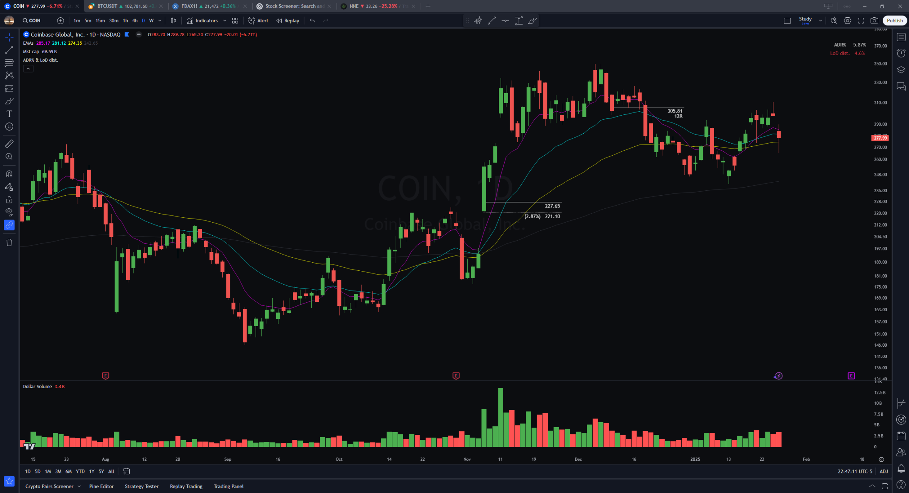

他到底什么时候买，
看错了又怎么办？
先不背缩写。先弄懂一件事：他找已经表现出强度的股票，等一个能清楚判断“自己看错了”的位置；再看价格有没有按预想转强。
他不是先问“这只能涨多少”。
他先问：如果我在这里买，价格跌到哪里，就说明这次判断不对？
找到这个位置，才知道自己要承担多大的损失。位置离得近，可以较早认错；离得远，同样股数就会亏更多。后面所有的图和线，都是为了帮助他回答这两个问题：在哪里尝试？在哪里认错？
先有关注的理由，再有动手的时机。
这页讲 Martin 的历史方法，不是今天任何股票的买卖意见。先读下面的入门部分；本人完整原图和做空例子收在文末“进阶资料”。
先认出图里的三种东西。
1. 一根“蜡烛”＝一段时间的价格
日线里，一根代表一个交易日；5 分钟图里，一根代表 5 分钟。红绿蜡烛也叫 K 线。
示意图。本文原图采用美股常见的“绿涨红跌”，与很多国内软件相反。上下细线伸到这一段的最高、最低价。
2. 平滑曲线＝把价格变化看慢一点
蜡烛很跳，均线把一段价格平滑起来，让人更容易看出总体向上还是向下。9 EMA 可以先读成“跟随近期价格变化比较快的平均价格线”；21、50 的反应通常更慢。
日线的 EMA 根据每根日线价格计算；小时图的 EMA 根据每根小时线价格计算。同样是“9”，换了图，时间含义就不同。
3. 底部柱子＝成交了多少
越高，表示这段时间成交越多。它不代表净买入：每笔成交同时有买方和卖方。
“支撑”和“压力”是什么意思？
支撑＝价格下跌到某片区域后，可能有买盘接住；压力＝上涨到某片区域后，可能有卖盘压住。它们都是待观察的可能性。跌到一条线附近，并不等于一定会涨。
先从“最近有动静”的名单里找。
扫描器就是股票软件里的筛选器：按某个条件把股票列出来，让人少翻一些无关的图。他在客座文里介绍的三组名单，分别回答三个问题。[1]
- 还没开盘，谁就明显高开了？
盘前跳空名单（Premarket）。它帮他发现突然受到关注的股票；高开本身还不是买入理由。
- 昨天谁特别强？
昨日强势名单（Potent）。再看这些股票是否属于同一个主题，有没有一组股票一起活跃。
- 过去一个月，谁一直领先？
近 30 日领涨名单（Leaders）。把一日热闹与持续表现区分开，再逐只翻图。
他偏好日常波动较大的股票。这里的 ADR 可以先理解成“平时一天从低到高大约能晃多大”；ADR 5% 不是每天上涨 5%。原文的偏好也不是一条所有市场都适用的硬门槛。[1]
要分开的两件事：名单让他发现候选股票；真正下单，还要看下面的价格形态与风险距离。筛出来，不等于要买。
他会关注哪三类形态？
投机实验室的中文视频把回调、突破和 EP 跳空并列展示。[4] 先用没有价格刻度的示意图认出区别，再回到真实图表。
回调：已经走强的股票，暂时退回来。
他要判断的：这是强势股票暂时喘口气，还是趋势真的变坏了？价格回落，只完成了前半段；还要观察有没有重新转强。[3]
突破：原来反复涨不过去，现在往上越过去。
“整理区”就是价格在一片范围内来回波动。突破和回调不必互相排斥：一只股票可以先回调，再在更小的范围里出现突破。[3]
EP：重大消息后，开盘价格突然跳到更高处。
EP 是 Episodic Pivot，通常用来描述消息引发的明显重新定价。视频将它单独列为一类；不等于“有好消息就买”。位置、后续价格反应和止损距离仍要单独判断。[4]
以上均为本站教学示意，不是真实行情，不是 Martin 的成交图。三类并非互斥，也不是完整自动交易规则。
“等回踩”，究竟在等什么？
- 先有强势的理由。
股票先前有较强表现，整理后低点逐渐抬高。一直往下跌的股票，不能只因为便宜，就叫它“强股回踩”。
- 提前圈一片值得观察的地方。
例如上行的均线、以前的重要价位，或 AVWAP 附近。它们是观察区域，不是保证会上涨的地板。
- 价格回到这里后，观察是否重新转强。
他会看更小周期，例如 1 分钟或 5 分钟图。在本人访谈的示例里，向上越过前一根小 K 线的高点，是一种确认方式。
- 先决定哪里算看错，再考虑这一笔。
他常参考当天低点，也会参考入场相关 K 线的低点。用哪一个与图形有关，不是永远套同一个百分比。
本人访谈：约 1:23 起讲“不能随便买任何触线”；约 1:57 起讲小周期入场和止损。[3]
这里的 AVWAP 到底帮他干什么？
把它先读成“从某个重要时点开始计算的成交均价线”。选定一个阶段高点后，从那里开始，把成交多的价格赋予更大权重。它可能与别的参考线靠近，让他重点观察这片区域。它不是当前所有持仓者的真实成本，也不是碰了就必须反弹。本人访谈约 1:08 起讲锚定位置。[3]
为什么先看日线，再看 5 分钟图？
日线先回答“这只股票整体在做什么，哪片区域值得等”；小周期再回答“现在有没有出现转强”。好比先用地图找路口，再走近看红绿灯。只看小图，容易把普通波动误当成大机会。
现在看 COIN：这两个价格，决定了最初的风险。
COIN 是 Coinbase 的股票代码。用这张本人公开的历史交易图，练习读懂“买入参考价”和“认错位置”。点击下面四步，一次只看一件事。
黄框圈出进入 11 月之前的图形。先认出它的经历，再看标注的交易价位。图中右边的上涨是后来才发生的，不能拿结果倒推“当时必然会涨”。

手机上可左右拖动图表，也可以 打开高清原图 ↗
原图：Martin Luk，经 Kyna Kosling 编辑发布。[1] 黄色框是本站阅读指引，未改动原图。图中价位及交易结果来自作者自述，未独立核实成交；这是事后讲图，不是无未来数据的回放；这里用它解释价格和风险，未将其归为 AVWAP 回踩案例。
看错一次，会损失多少？
沿用刚才原图的价格：227.65 − 221.10 = 每股 6.55 美元。
意思是：如果按图中价位进入，并能在标注的止损位置成交，每股的计划损失就是 6.55 美元。股数越多，总损失越大。
这是按止损价成交时的计划损失。
10 / 20 / 50 股是教学假设，不是下单建议。未计费用；如果跳空或滑点，实际损失可能更大。
“止损只有 2.87%”不等于账户亏 2.87%
2.87% 是这只股票从入场到止损的距离。你的账户损失还取决于买了多少、占账户多大比例。只报一个止损百分比，没有仓位，就没把风险讲完。
“12R”也不等于账户赚了 12 倍
R 就是这笔最初承担的风险。在这张图里，每股初始风险为 6.55 美元；作者标注的价格收益约为它的 12 倍。它描述的是一笔交易的盈亏比例，不是整个账户的收益率。
上述 2.87% 与约 12R 可由原图价位复算。未把其自述成绩当成策略有效性的独立证据。
为什么他可能经常止损，却仍然采用这种方法？
止损离得近，普通波动也可能把他扫出去。他在 2024 年回顾中自述，胜率约 25%，也经历过多笔连亏——即大约四笔里只有一笔盈利。他依靠的是少数较大的赢家弥补多次小损失，而不是每次都猜对。[1] 只把止损缩小，并不会自动产生优势；手续费、滑点与连续试错也会消耗资金。
不涨怎么办？涨了又怎么办？
走错了：按预先定义的失效位置处理。
逻辑是“这次尝试没成功”，不是给每次下跌重新找一个继续持有的理由。止损也不能保证一定按计划价格成交。
走对了：他会分批兑现，也会跟踪剩下的仓位。
“分批”就是先卖一部分；“跟踪”就是随着上涨继续观察，直到自己的退出条件出现。他在访谈里强调卖出并非一套完全固定的规则，会考虑行情与价格是否已走得很急。[3]
再看他的 SOUN 原图：他自己指出，没遵守 9 EMA 跟踪退出规则，导致利润回吐。这比只看到“曾经赚很多”更值得学。[1]
只看一处：右边先大涨，之后明显回落。事后能看出顶部，不表示当时一定知道；退出规则是在不知道未来时，约束自己的做法。
本人历史多头回顾，来源 [1]。不是近期行情。
把整套流程串起来。
- 先找有理由关注的股票。
扫描和主题帮他缩小范围，不替他下单。
- 等到计划观察的位置，再看价格反应。
回踩、突破、消息跳空，先分清正在讨论哪一种。
- 动手前知道在哪里认错。
每股可能亏多少，再乘股数，才是这笔计划承担的损失。
- 亏损要处理，盈利也要有退出依据。
漂亮的历史图不展示所有失败，学方法不能只学赢家。
检查自己是否懂了：两只股票都“碰到均线”，就都该买？
不能。还没知道它原来是强是弱、为什么留意这个位置、有没有重新转强、看错时距离多远。那条线只是参考，不能代替整套判断。
资料中的风险百分比、仓位和卖法有时间与场景差异。比如早期做空 Q&A 提过 35% 仓位上限，后来的访谈又谈到某些情况下超过它。不能拼成一份永不变化的万能规则；这里也没有完成独立回测。
进阶资料：再看 4 张本人做空研究原图
做空是借入股票卖出、希望跌后买回的另一类交易。先看懂上面的多头流程，再看这里。Martin 的这组研究先找日线上的潜在阻力，再用小时或日内图观察反转；这些是历史研究例子，不能当作完整成交记录。[2]
TEM：加入观察名单，和真正入场，是两步。
① 灰线从哪里来AVWAP 从阶段高点向右下延伸。右侧反弹靠近它，是原作者留意的阻力位置。
② 翻译蓝字“Added to watchlist”是加入观察名单；“Entry at ORL”是跌破开盘区间低点入场。
③ 读懂例外这张图确实标了 ORL，但正文也讨论了它不适用于所有反转。不能把单个图例变成“每天破 ORL 就做空”。
图：Martin Luk，TEM 日线研究例图。原文 [2] · 图示不构成完整的实盘成交凭证。
TSLA · 日线：先回答“在哪里留意”。
看右侧反弹与向下的线相遇的位置。它提供一个观察区域；还不能单凭“已经反弹很多”就认定会跌。下一张用另一个历史时期的小时线，解释确认方法。
图：Martin Luk，TSLA 日线研究例图。原文 [2] · 与下图是不同历史时期的独立例图，不是同一笔交易的放大。
TSLA · 小时线：再回答“什么时候出现证据”。
① 读蓝线英文是“前一根小时 K 线的低点”，不是前一天低点。
② 读箭头红色 K 线向下穿过这条线，展示反弹开始失去支撑的时刻。
③ 挡住事后视角右边的大跌是后来才知道的结果。可学习的是当时怎样定义失败，不是把后续跌幅当作预期。
图：Martin Luk，TSLA 小时线研究例图。原文 [2]
RGTI · 5 分钟：另一种确认，是冲高后回测失败。
“Retest HOD AVWAP”意为：回测从当日高点锚定的 AVWAP。看箭头附近，第一次冲高后价格退下来，再靠近这条线，随后出现明显向下的 K 线。这里看的是反弹受阻，而非见到第一根阴线就断言趋势结束。
图：Martin Luk，RGTI 五分钟研究例图。原文 [2] · HOD = 当日高点；与日线阶段高点的锚定不同。
资料从哪里来，哪些地方仍有限制。
- Martin Luk：2024 年交易回顾与经验
2025-02-01。Martin 客座文，Kyna Kosling 提供编辑支持，文中说明观点来自 Martin。本文选股扫描与 COIN / SOUN 原图来源。
- Martin Luk’s Low-Friction Study Process
2026-01-10。本人研究文稿与后续 Q&A；历史图例主要来自此前的研究。本文 TEM / TSLA / RGTI 原图来源。
- TraderLion：与 Martin Luk 的回踩策略访谈
本人出镜。本次已取得英文自动字幕，并核对回踩、入场、止损与卖出相关段落。自动字幕会把 R、股票代码和 AVWAP 识别错，未将识别错误当成新规则。可跳转看 1:05:39：回踩的前提、1:57:23：小周期入场、2:27:39：如何卖出。
- 投机实验室：23岁的香港交易员 Martin。
12 分 24 秒中文视频。本次分段查看画面与中文字幕，包括三类机会、选股、止损距离、仓位和退出；不是完整音频转写。它是第三方讲解，重绘图及统计不等于独立核实的成交记录。本页参考它展示的教学环节，再以本人资料核对关键方法。
- Martin 的 2025 年交易直播合集
由其客座文章链接，供继续看实际讲图。未逐场观看，不把整份播放列表当成已核验的证据。
原图版权归原作者及相关平台；此处为选图评论与教学解读，保留原始图像和标注。中文解释、术语说明、算式与流程重排由本站整理。示意图明确另标，不冒充本人交易图。检索与入门版修订：2026-10-23。